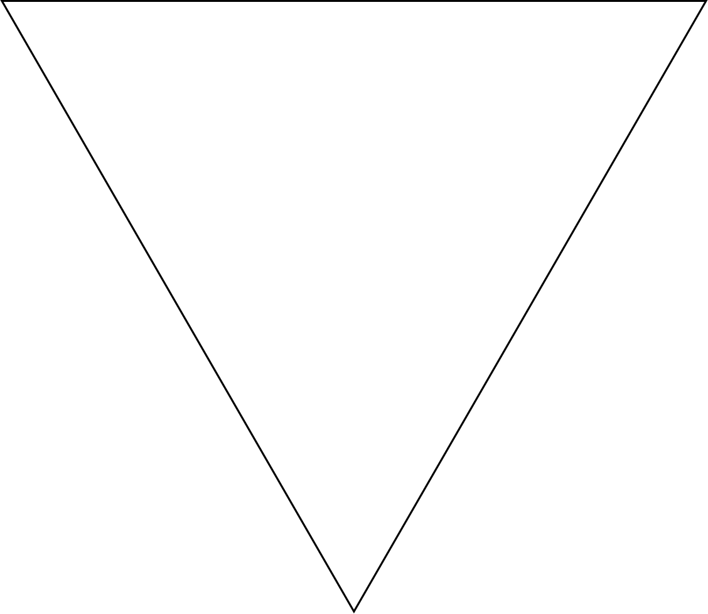

¿En dónde surge la primera cooperativa agrícola en la Argentina?
3
¿En dónde surge la primera cooperativa agrícola en la Argentina?
La primera manifestación del cooperativismo en el medio rural de nuestro país data del año 1898, cuando se funda la cooperativa El Progreso Agrícola, de Pigüé, al sur de la provincia de Buenos Aires. Fue fundada por un grupo de colonos franceses en la localidad de Pigüé con la intención de hacer frente a la problemática del granizo.